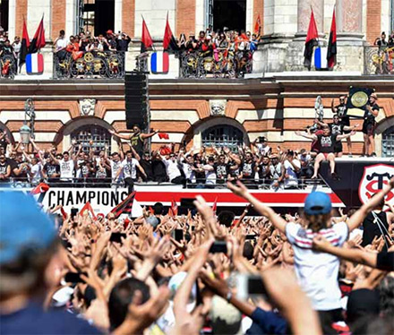

Sports
L’inéluctable gel de la saison
Champion de France en 2019, le Stade Toulousain n’aura pas de successeur en 2020. La saison en cours va devoir être gelée en raison du coronavirus. PHOTO AFP
Coronavirus - Avant de rencontrer la ministre des Sports ce matin, la LNR et les présidents de clubs se sont mis d'accord hier sur l'arrêt de la saison en cours
Ils n'avaient guère d'illusions au moment d'entamer ces discussions mais les présidents de clubs du rugby professionnel ont dû se rendre à l'évidence hier lors de la réunion téléphonique avec le président de la Ligue Nationale Paul Goze. Comme l'ancien 2e ligne de Perpignan le préconisait, ils se sont mis d'accord sur le gel de la saison en cours pour le Top 14 et la Pro D2. Pas de titres de champion de France décernés, ni de montées/relégations entre les deux étages supérieurs du rugby français.
À un très large consensus, ils ont admis que l' " option 2 ", la seule encore envisageable depuis la veille et le discours du Premier ministre Edouard Philippe à l'Assemblée nationale qui reportait à septembre la tenue de rencontres sportives rassemblant plus de 5000 personnes à septembre, n'était plus tenable. Pas de phase finale - demi-finales et finale et barrages pour la qualification européenne - possible à huis clos. Selon nos informations, seul Yann Roubert le président de Lyon s'est exprimé pour inciter à garder une chance, même très mince, de ne pas enterrer définitivement 2019-2020. Mais personne d'autre n'est venu au soutien. Laurent Marti, dont l'Union Bordeaux-Bègles caracole en tête du Top 14 avec 15 points d'avance sur le deuxième, s'est lui rangé à la décision du comité directeur de la LNR. La prochaine saison pourrait reprendre lors du week-end du 4 septembre, avec du public si la situation sanitaire le permet.